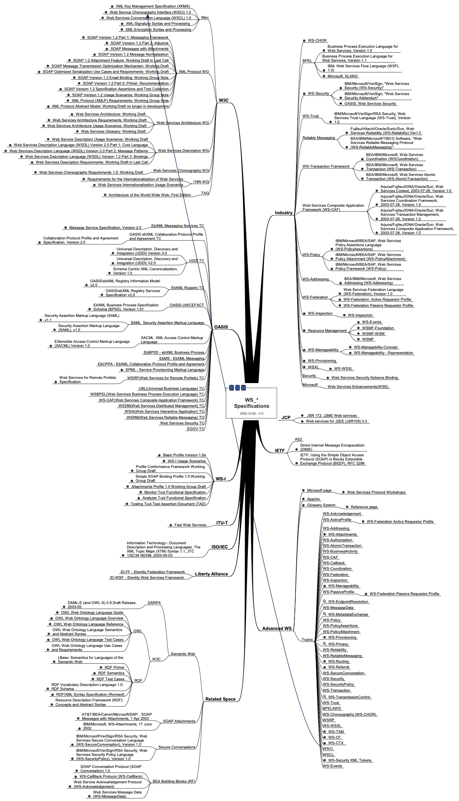
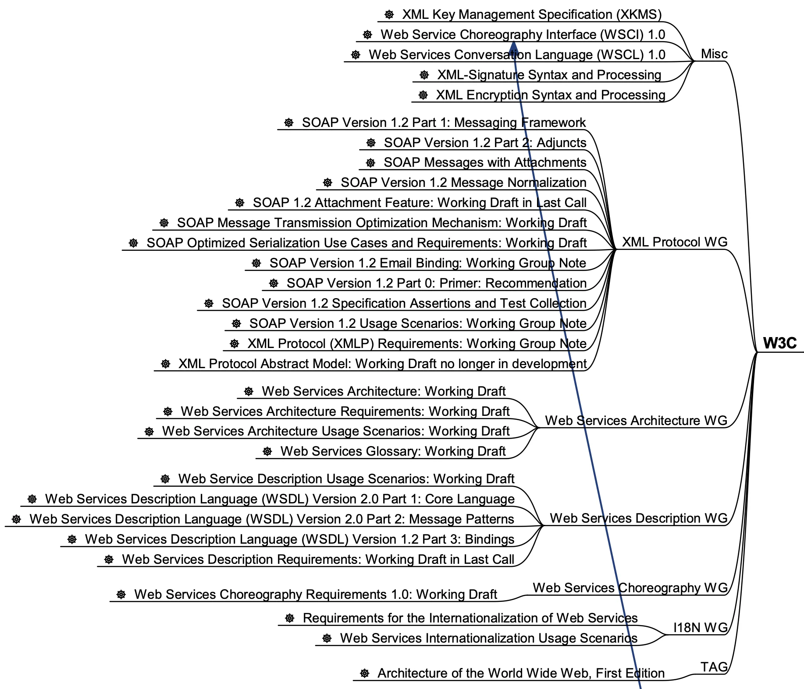

michael.eichberg@dhbw.de, Raum 149B
1.0.2.3
[HTML] https://delors.github.io/ds-middleware/folien.de.md.html
[PDF] https://delors.github.io/ds-middleware/folien.de.md.html.pdf
AI assistants (in particular Claude, but also ChatGPT, Ollama with Gemma/LLama/Qwen, OpenCode with Kimi, etc.) were used to assist in the creation of the slides. This was done, for example, to efficiently generate graphics (i.e. SVG files), or to generate summary tables. Furthermore, AI was used for general quality assurance. Content that may have been suggested by an AI was explicitly validated and adapted whenever it was incorporated.
1/* A simple TCP based server. The port number is passed as an argument */2#include <stdio.h>3#include <sys/types.h>4#include <sys/socket.h>5#include <netinet/in.h>67void error(char *msg){perror(msg); exit(1);}89int main(int argc, char *argv[]){10int sockfd, newsockfd, portno, clilen;11char buffer[256]; int n;12struct sockaddr_in serv_addr, cli_addr;1314sockfd = socket(AF_INET, SOCK_STREAM, 0); // socket() returns a socket descriptor15if (sockfd < 0)16error("ERROR opening socket");1718bzero((char *) &serv_addr, sizeof(serv_addr)); // bzero() sets all values to zero.19portno = atoi(argv[1]); // atoi() converts str into an integer2021serv_addr.sin_family = AF_INET;22serv_addr.sin_addr.s_addr = INADDR_ANY;23serv_addr.sin_port = htons(portno);2425if (bind(sockfd, (struct sockaddr *) &serv_addr, sizeof(serv_addr)) < 0)26error("ERROR on binding");27listen(sockfd,5); // tells the socket to listen for connections28clilen = sizeof(cli_addr);29newsockfd = accept(sockfd, (struct sockaddr *) &cli_addr, &clilen);30if (newsockfd < 0) error("ERROR on accept");3132bzero(buffer,256);33n = read(newsockfd,buffer,255);34if (n < 0) error("ERROR reading from socket");35printf("Here is the message: %s\n",buffer);36n = write(newsockfd,"I got your message",18);3738if (n < 0) error("ERROR writing to socket");3940return 0;41}
1#include <stdio.h>2#include <sys/types.h>3#include <sys/socket.h>4#include <netinet/in.h>5#include <netdb.h>67void error(char *msg){ perror(msg);exit(0);}89int main(int argc, char *argv[]){10int sockfd, portno, n;11struct sockaddr_in serv_addr;12struct hostent *server;13char buffer[256];1415portno = atoi(argv[2]);1617sockfd = socket(AF_INET, SOCK_STREAM, 0);18if (sockfd < 0)19error("ERROR opening socket");2021server = gethostbyname(argv[1]);22bzero((char *) &serv_addr, sizeof(serv_addr));23serv_addr.sin_family = AF_INET;24bcopy((char *)server->h_addr, (char *)&serv_addr.sin_addr.s_addr, server->h_length);25serv_addr.sin_port = htons(portno);2627if (connect(sockfd,&serv_addr,sizeof(serv_addr)) < 0) error("ERROR connecting");2829printf("Please enter the message: ");30bzero(buffer,256);31fgets(buffer,255,stdin);32n = write(sockfd,buffer,strlen(buffer));33if (n < 0) error("ERROR writing to socket");34bzero(buffer,256);35n = read(sockfd,buffer,255);36printf("%s\n",buffer);3738return 0;39}
Wir müssen uns kümmern um …
… die Einrichtung eines Kanals und alle Fehler, die während dieses Prozesses auftreten können.
… die Festlegung eines Protokolls.
Wer sendet was, wann, in welcher Reihenfolge und welche Antwort wird erwartet?
… Nachrichtenformate
Umwandlung von Daten der Anwendungsebene in Bytes, die über das Netz übertragen werden können.
Eine Softwareschicht oberhalb des Betriebssystems und unterhalb des Anwendungsprogramms, die eine gemeinsame Programmierabstraktion in einem verteilten System bietet.
Ein Baustein auf höherer Ebene als die vom Betriebssystem bereitgestellten APIs (z. B. Sockets)
Die von Middleware angebotenen Programmierabstraktionen verbergen einen Teil der Heterogenität und bewältigen einen Teil der Komplexität, mit der Programmierer einer verteilten Anwendung umgehen müssen:
Middleware maskiert immer die Heterogenität der zugrundeliegenden Netzwerke und Hardware.
Middleware maskiert meistens die Heterogenität von Betriebssystemen und/oder Programmiersprachen.
Manche Middleware maskiert sogar die Heterogenität zwischen den Implementierungen des gleichen Middleware-Standards durch verschiedene Hersteller.
Alte Middlewarestandards – wie zum Beispiel CORBA – waren sehr komplex und die Implementierungen verschiedener Hersteller meist nicht vollständig kompatibel.
Middleware bietet (beim Programmieren) Transparenz in Bezug auf eine oder mehrere der folgenden Dimensionen:
Standort
Nebenläufigkeit
Replikation
Ausfälle (bedingt)
Middleware ist die Software, die ein verteiltes System (DS) programmierbar macht.
Hinter Programmierabstraktionen steht eine komplexe Infrastruktur, die diese Abstraktionen implementiert
Middleware-Plattformen können sehr komplexe Softwaresysteme sein.
Da die Programmierabstraktionen immer höhere Ebenen erreichen, muss die zugrunde liegende Infrastruktur, die die Abstraktionen implementiert, entsprechend wachsen.
Zusätzliche Funktionalität wird fast immer durch zusätzliche Softwareschichten implementiert.
Die zusätzlichen Softwareschichten erhöhen den Umfang und die Komplexität der für die Nutzung der neuen Abstraktionen erforderlichen Infrastruktur.
Seit Jahrzehnten kann beobachtet werden, dass Middleware immer komplexer wird bzw. wurde bis zu dem Punkt an dem die Komplexität kaum mehr beherrschbar war. Zu diesen Zeitpunkten wurden dann häufig neue Ansätze entwickelt, die die Komplexität reduzierten bis diese wiederum Eingang in komplexere Middleware-Produkten Eingang fand.
Ansätze, wie z. B. REST, haben sich als recht erfolgreich erwiesen stellen aber Entwickler vor neue Herausforderungen.
Die Infrastruktur kümmert sich um nicht-funktionale Eigenschaften, die normalerweise von Datenmodellen, Programmiermodellen und Programmiersprachen ignoriert werden:
Performance
Verfügbarkeit
Ressourcenmanagement
Zuverlässigkeit
usw.
Middleware unterstützt zusätzliche Funktionen die die Entwicklung, Wartung und Überwachung einfacher und kostengünstiger machen (Auszug):
Protokollierung (Logging)
Wiederherstellung (Recovery)
Sprachprimitive für transaktionale Abgrenzung
(Bzw. fortgeschrittene Transaktionsmodelle (z. B. transaktionale RPC) oder transaktionale Dateisysteme)
Insbesondere die explizite Erzeugung von Stubs und Skeletons durch einen IDL Compiler erfolgt so in der heutigen Zeit nicht mehr. Die Erzeugung von Stubs und Skeletons - wenn überhaupt erforderlich - erfolgt heute automatisch durch die Middleware.
Middleware beabsichtigt die Details der Hardware, der Netze und der Verteilung auf niedriger Ebene zu verbergen.
Anhaltender Trend zu immer leistungsfähigeren Primitiven (Events), die zusätzliche Eigenschaften haben oder eine flexiblere Nutzung des Konzepts ermöglichen.
Die Entwicklung und das Erscheinungsbild für den Programmierer wird von den Trends in den Programmiersprachen diktiert:
RPC und C
CORBA und C++
RMI (Corba) und Java
„Klassische“ Webservices und XML
RESTful Webservices und JSON
Eine Middleware stellt eine umfassende Plattform für die Entwicklung und den Betrieb komplexer verteilter Systeme zur Verfügung.
Schwerpunkt: verstecken der Netzkommunikation.
Ein Prozess kann eine Prozedur aufrufen deren Implementierung sich auf einem entfernten Rechner befindet:
Programmierer von verteilten Systemen müssen sich nicht mehr um alle Details der Netzwerkprogrammierung kümmern (d. h. keine „expliziten“ Sockets mehr).
Überbrückung der konzeptionellen Lücke zwischen dem Aufruf lokaler Funktionalität über Prozeduren und dem Aufruf entfernter Funktionalität über Sockets.
Ein Server ist ein Programm, das bestimmte Dienste implementiert.
Cients möchten diese Dienste in Anspruch nehmen:
Die Kommunikation erfolgt durch das Senden von Nachrichten (kein gemeinsamer Speicher, keine gemeinsamen Festplatten usw.)
Einige minimale Garantien müssen gegeben werden (Behandlung von Fehlern, Aufrufsemantik, usw.)
Sollen entfernte Aufrufe transparent oder nicht transparent für den Entwickler sein?
Ein entfernter Aufruf ist etwas völlig anderes als ein lokaler Aufruf; sollte sich der Programmierer dessen bewusst sein?
Wie können Daten zwischen Maschinen ausgetauscht werden, die möglicherweise unterschiedliche Darstellungen für verschiedene Datentypen verwenden?
Komplexe Datentypen müssen linearisiert werden:
der Prozess des Aufbereitens der Daten in eine für die Übermittlung in einer Nachricht geeignete Form.
der Prozess der Wiederherstellung der Daten bei ihrer Ankunft am Zielort, um eine originalgetreue Repräsentation zu erhalten.
Wie findet und bindet man den Dienst, den man tatsächlich will, in einer potenziell großen Sammlung von Diensten und Servern?
Das Ziel ist, dass der Kunde nicht unbedingt wissen muss, wo sich der Server befindet oder sogar welcher Server den Dienst anbietet (Standorttransparenz).
Wie geht man mehr oder weniger elegant mit Fehlern um:
Server ist ausgefallen
Kommunikation ist gestört
Server beschäftigt
doppelte Anfragen ...
Je nach System ist die Reihenfolge der Bytes unterschiedlich:
Intel-CPUs sind Little-Endian.
PowerPC ist Big-Endian.
ARM kann beides und ist meistens Little-Endian.
Um Transparenz zu erreichen, führte RPC viele Konzepte von Middleware-Systemen ein:
Interface Description Language (IDL)
Verzeichnis- und Benennungsdienste
Dynamische Bindung
Marshalling und Unmarshalling
Opaque References, um bei verschiedenen Aufrufen auf dieselbe Datenstruktur oder Entität auf dem Server zu verweisen.
(Der Server ist für die Bereitstellung dieser undurchsichtigen Referenzen verantwortlich.)
Nehmen wir an, ein Client stellt eine RPC-Anfrage an einen Dienst eines bestimmten Servers. Nachdem die Zeitüberschreitung abgelaufen ist, beschließt der Client die Anfrage erneut zu senden. Das finale Verhalten hängt von der Semantik des Aufrufs (Call Semantics) ab:
Maybe (vielleicht; keine Garantie)
Die Zielmethode kann ausgeführt worden sein und die Antwortnachricht(en) ging(en) verloren oder die Methode wurde gar nicht erst ausgeführt da die Anfrage verloren ging.
XMLHTTPRequests und fetch() in Webbrowsern verwenden diese Semantik.
At least once (mindestens einmal)
Die Prozedur wird ausgeführt werden solange der Server nicht endgültig versagt.
Es ist jedoch möglich, dass sie mehr als einmal ausgeführt wird wenn der Client die Anfrage nach einer Zeitüberschreitung erneut gesendet hatte.
At most once (höchstens einmal)
Die Prozedur wird entweder einmal oder gar nicht ausgeführt. Ein erneutes Senden der Anfrage führt nicht dazu, dass die Prozedur mehrmals ausgeführt wird.
Exactly once (genau einmal)
Das System garantiert die gleiche Semantik wie bei lokalen Aufrufen unter der Annahme, dass ein abgestürzter Server irgendwann wieder startet.
Verwaiste Aufrufe, d. h. Aufrufe auf abgestürzten Server-Rechnern, werden nachgehalten, damit sie später von einem neuen Server übernommen werden können.
Die Verbindung zwischen Client und Server in einem traditionellen RPC. Der Client wird blockiert und wartet.
Die Verbindung zwischen Client und Server bei einem asynchronen RPC. Der Client wird nicht blockiert.
Ein normaler Aufruf mittels XMLHTTPRequest oder fetch (JavaScript) ist auch immer asynchron.
RPC bietet einen Mechanismus, um verteilte Anwendungen auf einfache und effiziente Weise zu implementieren.
RPC ermöglicht den modularen und hierarchischen Aufbau großer verteilter Systeme:
Client und Server sind getrennte Einheiten
Der Server kapselt und verbirgt die Details der Backend-Systeme (wie z. B. Datenbanken)
RPC ist kein Standard, sondern wurde auf viele verschiedene Arten umgesetzt.
RPC ermöglicht Entwicklern den Aufbau verteilter Systeme, löst aber nur ausgewählte Aspekte.
Wenn man moderne Ansätze wie RESTful WebServices mit RPC vergleicht, dann fällt auf, dass RPC eine deutlich bessere Tranzparenz bietet.
Das Network File System (NFS) und SMB sind bekannte RPC-basierte Anwendungen.
Ermöglicht es einem Objekt, das in einer Java Virtual Machine (VM) läuft, Methoden eines Objekts aufzurufen, das in einer anderen Java VM läuft.
Entfernte Objekte können ähnlich wie lokale Objekte behandelt werden.
Übernimmt das Marshalling, den Transport und die Garbage Collection der entfernten Objekte.
Teil von Java seit JDK 1.1
Java RMI ist eine spezielle Form von RPC, die in Java implementiert wurde. Der Unterschied ergibt sich im Prinzip aus dem Unterschied zwischen einem Prozeduraufruf und einem Methodenaufruf auf ein Objekt
Jeder Prozess enthält sowohl Objekte die entfernte Aufrufe empfangen können als auch solche, die nur lokale Aufrufe empfangen können.
(Objekte die entfernte Aufrufe empfangen können, werden Remote Objects genannt).
Objekte müssen die Remote-Objektreferenz eines Objekts in einem anderen Prozess kennen, um dessen Methoden aufrufen zu können (Remote Method Invocation; Remote Object References)
Der Proxy versteckt für den Client, dass es sich um einen entfernten Aufrufe handelt. Er implementiert die Remote-Schnittstelle und kümmert sich um das Marshalling und Unmarshalling der Parameter und des Ergebnisses.
Der Skeleton ist für die Entgegennahme der Nachrichten verantwortlich und leitet die Nachricht an das eigentliche Objekt weiter. Er sorgt für die Transparenz auf Serverseite.
Referenzen auf Remote Objects sind systemweit eindeutig und können frei zwischen Prozessen weitergegeben werden (z. B. als Parameter). Die Implementierung der entfernten Objektreferenzen wird von der Middleware verborgen (Opaque-Referenzen).
Remote Reference Layer: RMI-spezifische Kommunikation über TCP/IP, Verbindungsinitialisierung, Serverstandort, Verarbeitung serialisierter Daten
RMI Transport Layer (TCP): Verbindungsverwaltung, Bereitstellung einer zuverlässigen Datenübertragung zwischen Endpunkten
Internetprotokoll in IP-Paketen enthaltene Datenübertragung (unterste Ebene)
Schnittstelle des Zeitservers
1import java.rmi.Remote;2import java.rmi.RemoteException;3import java.util.Date;45public interface Time extends Remote {6public Date getTime() throws RemoteException;7}
Implementierung der Schnittelle durch den Zeitserver
1import java.rmi.RemoteException;2import java.rmi.server.UnicastRemoteObject;3import java.util.Date;45public class TimeServer extends UnicastRemoteObject implements Time {6public TimeServer() throws RemoteException {7super();8}910public Date getTime() {11return new Date();12}13}
Registrierung des Zeitservers
1import java.rmi.Naming;23public class TimeRegistrar {45/** @param args args[0] has to specify the hostname. */6public static void main(String[] args) throws Exception {7String host = args[0];8TimeServer timeServer = new TimeServer();9Naming.rebind("rmi://" + host + "/ServerTime", timeServer);10}11}
Client des Zeitservers
1import java.rmi.Naming;2import java.util.Date;34public class TimeClient {5public static void main(String[] args) throws Exception {6String host = args[0];7Time timeServer = (Time) Naming.lookup("rmi://" + host + "/ServerTime");8System.out.println("Time on " + host + " is " + timeServer.getTime());9}10}
RMI verwendet einen referenzzählenden Garbage-Collection-Algorithmus. Netzwerkprobleme können dann zu einer verfrühten GC führen was wiederum bei Aufrufen zu Ausnahmen führen kann.
Die Aufrufsemantik (Call Semantics) von RMI ist at most once.
(Un)Marshalling ist in Java RMI automatisch und verwendet Java Object Serialization.
Der Overhead kann leicht ~25%-50% der Zeit für einen entfernten Aufruf ausmachen.
Die Probleme unternehmensübergreifende Punkt-zu-Punkt-Integration zu ermöglichen führten zur Entwicklung der nächsten Generation von Middleware-Technologien.
Jedes Unternehmen verwendet(e) seinen eigenen „konkreten“` Message-Broker - wenn wir mit mehreren Unternehmen kommunizieren wollen, müssen wir mehrere Adapter/Lösungen implementieren und pflegen.
Webservices are self-contained, modular business applications that have open, internet-oriented, standards-based interfaces.
—UDDI Konsortium
Service Provider: Die Einheit, die den Dienst implementiert und anbietet ihn im Namen des Anforderers auszuführen.
Service Requestor: Der potenzielle Nutzer eines Dienstes.
Service Registry: Auflistung der verfügbaren Dienste.
SOAP ist das Protokoll klassischer Web Services und ermöglicht die Kommunikation zwischen Anwendungen.
SOAP umfasst die folgenden Teile:
Ein Nachrichtenformat, das beschreibt, wie eine Nachricht in ein XML-Dokument verpackt werden kann (Umschläge, Header, Body...)
Ein Satz von Kodierungsregeln für Daten
Eine Beschreibung wie eine SOAP-Nachricht mit dem zugrundeliegenden Transportprotokoll (HTTP oder SMTP) transportiert werden sollte. Wie eine SOAP-Nachricht in eine HTTP-Anfrage oder in eine E-Mail (SMTP) eingebettet werden kann.
Eine Reihe von Regeln, die bei der Verarbeitung einer SOAP-Nachricht zu befolgen sind, und die an dieser Verarbeitung beteiligten Stellen; welche Teile der Nachrichten von wem gelesen werden sollten und welche Maßnahmen diese Stellen ergreifen sollten, wenn sie den Inhalt nicht verstehen.
SOAP ist eine Weiterentwicklung von XML-RPC und stand ursprünglich für Simple Object Access Protocol.
SOAP (ab Version 1.2) ist ein Standard des W3C.
Nachrichten sind Umschläge, in die die Nutzdaten der Anwendung eingeschlossen werden.
Eine Nachricht hat zwei Hauptbestandteile:
Für infrastrukturelle Daten wie Sicherheit oder Zuverlässigkeit vorgesehen.
Für Daten auf Anwendungsebene vorgesehen. Jeder Teil kann in Blöcke unterteilt werden.
1<SOAP-ENV:Envelope2xmlns:SOAP-ENV="http://schemas.xmlsoap.org/soap/envelope/"3SOAP-ENV:encodingStyle="http://schemas.xmlsoap.org/soap/encoding/" />45<SOAP-ENV:Header>6<t:Transaction xmlns:t="ws-transactions-URI" SOAP-ENV:mustUnderstand="1">7575398</t:Transaction>9</SOAP-ENV:Header>1011<SOAP-ENV:Body>12<m:GetLastTradePrice xmlns:m="Some-URI">13<symbol>DEF</symbol>14</m:GetLastTradePrice>15</SOAP-ENV:Body>1617</SOAP-ENV:Envelope>
1POST /StockQuote HTTP/1.12Host: www.stockquoteserver.com3Content-Type: text/xml; charset="utf-8"4Content-Length: nnnn5SOAPAction: "Some-URI"67<SOAP-ENV:Envelope8xmlns:SOAP-ENV="http://schemas.xmlsoap.org/soap/envelope/"9SOAP-ENV:encodingStyle="http://schemas.xmlsoap.org/soap/encoding/">1011<SOAP-ENV:Body>12<m:GetLastTradePrice xmlns:m="Some-URI">13<symbol>DIS</symbol>14</m:GetLastTradePrice>15</SOAP-ENV:Body>16</SOAP-ENV:Envelope>
1HTTP/1.1 200 OK2Content-Type: text/xml; charset="utf-8"3Content-Length: nnnn45<SOAP-ENV:Envelope6xmlns:SOAP-ENV="http://schemas.xmlsoap.org/soap/envelope/"7SOAP-ENV:encodingStyle="http://schemas.xmlsoap.org/soap/encoding/" />89<SOAP-ENV:Body>10<m:GetLastTradePriceResponse xmlns:m="Some-URI">11<Price>34.5</Price>12</m:GetLastTradePriceResponse>13</SOAP-ENV:Body>14</SOAP-ENV:Envelope>


ZeroMQ ist eine Messaging-Infrastruktur ohne explizite Server („Broker“).
ZeroMQ unterstützt verbindungsorientierte aber asynchrone Kommunikation.
ZeroMQ basiert auf klassischen Sockets, fügt aber neue Abstraktionen hinzu, um folgende Messaging Patterns zu ermöglichen:
request-reply
pub-sub (publish-subscribe)
pipeplining (parallele Verarbeitung)
ZeroMQ ermöglicht N-zu-N Kommunikation.
ZeroMQ unterstützt sehr viele Programmiersprachen; der Nutzer ist für das passend Marshalling bzw. Unmarshalling verantwortlich.
Sollte zum Beispiel der Server in Java und der Client in C geschrieben sein, dann ist ggf. das Verständnis darüber wie ein String übertragen wird unterschiedlich (z. B. mit null terminiert oder mit einer Länge versehen).
Ermöglicht die „übliche“ Kommunikation zwischen einem Client und einem Server. Allerdings findet ggf. eine Pufferung statt, wenn der Server nicht erreichbar ist.
Ermöglicht es den Clients, sich für ein bestimmtes Thema zu registrieren und dann alle Nachrichten zu erhalten, die zu diesem Thema veröffentlicht werden. Ein Nachricht mit einem bestimmten Thema wird an alle dafür registrierten Clients gesendet.
Ermöglicht die Versendung einer Aufgabe an genau einen beliebigen Worker aus einer Menge von (homogenen) Workern.
Publisher
1import static java.lang.Thread.currentThread2import org.zeromq.SocketType;3import org.zeromq.ZMQ;4import org.zeromq.ZContext;56public class Publisher {7public static void main(String[] args) throws Exception {8try (ZContext context = new ZContext()) {9ZMQ.Socket publisher = context.createSocket(SocketType.PUB);10publisher.bind("tcp://*:5556");11publisher.bind("ipc://" + <endpoint>);1213while (!currentThread().isInterrupted()) {14int zipcode = <some zipcode>15// Send to all subscribers16String update = String.format("%05d %s", zipcode, <some msg>);17publisher.send(update, 0);18} } } }
Subscriber
1import java.util.StringTokenizer;2import org.zeromq.SocketType;3import org.zeromq.ZMQ;4import org.zeromq.ZContext;56public class Subscriber{7public static void main(String[] args) {8try (ZContext context = new ZContext()) {9ZMQ.Socket subscriber = context.createSocket(SocketType.SUB);10subscriber.connect("tcp://localhost:5556");11subscriber.subscribe(<zipcode(Str)>.getBytes(ZMQ.CHARSET));12while(true) {13String string = subscriber.recvStr(0);14// e.g. take string apart:15// part1: zipcode16// part2: message17System.out.println(string);18} } } }
1import signal2import time3import zmq45signal.signal(signal.SIGINT,6signal.SIG_DFL)78context = zmq.Context()9socket = context.socket(zmq.PUB)10socket.bind('tcp://*:5555')1112for i in range(5):13socket.send(b'status 5')14socket.send(b'All is well')15time.sleep(1)
1import signal2import zmq345signal.signal(signal.SIGINT,6signal.SIG_DFL)78context = zmq.Context()9socket = context.socket(zmq.SUB)10socket.connect('tcp://localhost:5555')11socket.setsockopt(zmq.SUBSCRIBE, b'status')1213while True:14message = socket.recv_multipart()15print(f'Received: {message}')
Bzgl. des Handlings von Signalen in Python siehe auch: https://docs.python.org/3/library/signal.html#signal.signal
MOM bzw. Message-queueing Systems unterstützen persistente asynchrone Kommunikation.
Sehr große Nachrichten werden unterstützt.
Es wird nur die Garantie gegeben, dass Nachrichten letztendlich in die Warteschlange des Empfängers gelegt werden und die Nachrichten in der richtigen Reihenfolge ankommen.
(Insbesondere wird keine Garantie gegeben, dass die Nachricht gelesen wird.)
Der Sender und Empfänger sind nicht notwendigerweise gleichzeitig aktiv.
Nachrichten haben immer einen eindeutigen Empfänger und quasi beliebigen Inhalt.
Operation | Beschreibung |
|---|---|
PUT | Legt eine Nachricht in eine bestimmte Warteschlange. |
GET | Blockiert an einer bestimmten Warteschlange bis eine Nachricht verfügbar ist. Entfernt die erste Nachricht. |
POLL | Prüft, ob eine Nachricht in einer bestimmten Warteschlange verfügbar ist. Entfernt ggf. die erste Nachricht. POLL blockiert niemals |
NOTIFY | Registriert einen Handler (Callback) der aufgerufen wird, wenn eine Nachricht einer bestimmten Warteschlange hinzugefügt wird. |
Queue Managers sind der zentrale Baustein von Message-queueing Systemen. Im Allgemeinen gibt es (mindestens konzeptionell) einen lokalen Queue Manager pro Prozess. Ein Queue Manager ist ein Prozess, der Nachrichten in Warteschlangen speichert und verwaltet. Bei Bedarf kann er mehrere Warteschlangen verwalten und an andere Queue Manager weiterleiten.
Asynchrone, verbindungsorientierte Kommunikation
Entwickeln Sie einen Client für einen „Logging Server“, der Lognachrichten (Strings) an den Server sendet. Im Fehlerfall, z. B. wenn der Server nicht verfügbar ist oder es zu einer Netzwerkpartitionierung kam, sollen die Nachrichten zwischengepuffert werden und bei Serververfügbarkeit wieder zugestellt werden. Mit anderen Worten: Im Fehlerfall soll der Client nicht blockieren, sondern weiter funktionieren. Der Client stellt stattdessen die Nachrichten dann zu, wenn der Server wieder verfügbar wird.
Stellen Sie sicher, dass Nachrichten immer in der richtigen Reihenfolge am Server ankommen. D. h. stellen Sie zum Beispiel sicher, dass eine gepufferte Nachricht nie nach einer neueren Nachricht ankommt.
Verwenden Sie den Code im Anhang als Schablone.
Einfacher TCP basierter SyslogServer in Java
import java.net.*;
import java.io.*;
public class SyslogServer {
public static void main(String[] args) {
ServerSocket server = new ServerSocket(9999);
try {
while (true) {
try (Socket con = server.accept()) {
var in = con.getInputStream();
var ir = new InputStreamReader(in);
var br = new BufferedReader(ir);
System.out.println("[Logging] " + br.readLine());
} catch (IOException e) {
System.err.println(e);
}
}
} catch (IOException e) {
System.err.println(e);
} finally {
if (server != null) {
server.close();
}
}
}
}Schablone für den Client in Java
import java.net.*;
import java.io.*;
public class Client {
/**
* Versendet die Nachricht an den Server (wenn möglich).
*/
private static void sendMsg(String msg) throws IOException{
try (Socket s = new Socket("localhost", 9999)) {
BufferedReader networkIn =
new BufferedReader(
new InputStreamReader(s.getInputStream()));
PrintWriter networkOut =
new PrintWriter(s.getOutputStream());
networkOut.println(msg);
networkOut.flush();
}
}
> Datenstruktur zum Zwischenspeichern der
> bisher nicht erfolgreich versendeten Nachrichten!
public static void log(String msg) {
> Schicke Nachricht an den Server (wenn möglich).
> Blockiert nicht, wenn der Server nicht verfügbar ist.
}
public static void startThread() throws Exception {
Thread.ofVirtual().start(() -> {
while (true) {
try {
// Alle 5 Sekunden prüfen wir ob wir noch
// nicht versendete Nachrichten haben:
Thread.sleep(5000);
} catch (InterruptedException e) { }
> Versende Nachrichten,
> die noch nicht versendet wurden
}
});
}
public static void main(String[] args) throws Exception {
startThread();
BufferedReader userIn =
new BufferedReader(
new InputStreamReader(System.in));
while (true) {
String theLine = userIn.readLine();
if (theLine == null)
break;
log(theLine);
}
}
}Asynchrone, verbindungsorientierte Kommunikation
Entwickeln Sie sowohl einen Client (bzw. eine Clientkomponente) als auch einen Server für das zentralisierte Loggen von Nachrichten.
Im Fehlerfall, z. B. wenn der Server nicht verfügbar ist oder es zu einer Netzwerkpartitionierung kam, sollen die Nachrichten, die der Client an den Server senden will/wollte, zwischengepuffert werden und bei Serververfügbarkeit wieder zugestellt werden. Mit anderen Worten: die Methode des Clients zum senden von Nachrichten sollte nicht blockieren, sondern immer weiter funktionieren - auch im Fehlerfall.
Anforderungen
Stellen Sie sicher, dass Nachrichten immer in der richtigen Reihenfolge am Server ankommen. D. h. stellen Sie zum Beispiel sicher, dass eine gepufferte Nachricht nie nach einer neueren Nachricht ankommt.
Der Client nimmt (hier) die Nachrichten über die Konsole entgegen und sendet sie direkt an den Server. Der Server sollte diese dann sofort ausgeben!
Stellen Sie sicher, dass keine Nachrichten verloren gehen, wenn der Server unkontrolliert beendet wird.
Bevor Sie versuchen eine Nachricht wieder zu versenden, warten Sie X Sekunden (z. B. 5 Sekunden).
Hinweise
Orientieren Sie sich an dem Code auf den Folien.
Nutzen Sie ggf. die Möglichkeit Sockets in File-Objekte zu verwandeln, um die Nachrichten zu senden. Vergessen Sie ggf. nicht flush() aufzurufen, damit die Nachricht auch wirklich versendet wird.
Prüfen Sie explizit, dass - wenn Sie Ihren Server abrupt beenden (CTRL+C) - und dann ganz schnell mehrere kleine Nachrichten senden, dass diese auch später alle ankommen. Falls dies nicht der Fall ist, überlegen Sie sich, wie Sie das Problem lösen können und implementieren Sie die Lösung.
Keine Anforderungen
Duplikate von Nachrichten müssen nicht erkannt werden.
Schablone für die Serverseite
import queue
import socket
import queue
import threading
HOST = "localhost"
PORT = 5678
PRINT_QUEUE = queue.Queue()
def print_queue_handler():
while True:
try:
msg = PRINT_QUEUE.get()
print(msg, end="")
finally:
PRINT_QUEUE.task_done()
def ts_print(msg):
PRINT_QUEUE.put(msg)
# implement the server logic here...
if __name__ == "__main__":
threading.Thread(target=print_queue_handler, daemon=True).start()
# start/run server
PRINT_QUEUE.join()